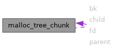

- Generated by
 1.15.0
1.15.0
|
XenevaOS
|

Public Attributes | |
| size_t | prev_foot |
| size_t | head |
| struct malloc_tree_chunk * | fd |
| struct malloc_tree_chunk * | bk |
| struct malloc_tree_chunk * | child [2] |
| struct malloc_tree_chunk * | parent |
| bindex_t | index |
| struct malloc_tree_chunk * malloc_tree_chunk::bk |
| struct malloc_tree_chunk * malloc_tree_chunk::child |
| struct malloc_tree_chunk * malloc_tree_chunk::fd |
| size_t malloc_tree_chunk::head |
| bindex_t malloc_tree_chunk::index |
| struct malloc_tree_chunk * malloc_tree_chunk::parent |
| size_t malloc_tree_chunk::prev_foot |